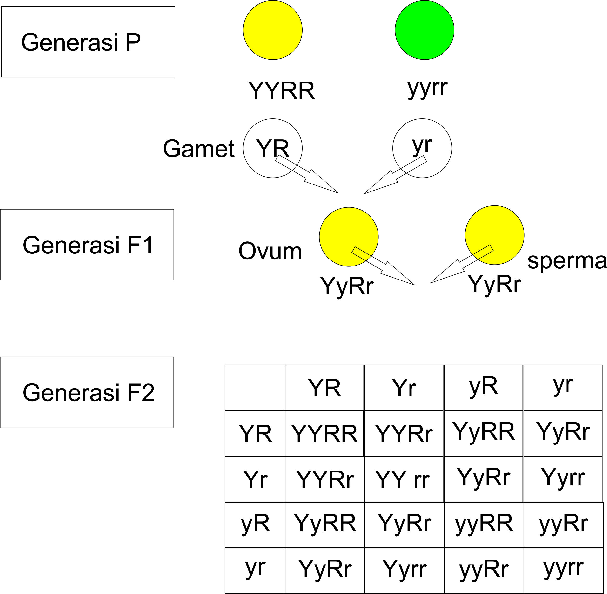

Hukum Pemilahan Bebas (Hukum Mendel II)
Hukum pengelompokkan gen secara bebas atau disebut asortasi yang artinya setiap gen / sifat dapat berpasangan secara bebas dengan gen / sifat lain.
Pada pembentukkan sel kelamin (gamet), alel mengadakan kombinasi secara bebas sehingga sifat yang muncul dalam keturunannya beraneka ragam.
Hukum ini berlaku untuk persilangan dengan dua sifat beda (dihibrid) atau lebih (polihibrid).
Misalnya dua dari tujuh karakter yang dipelajari Mendel pada waktu itu adalah warna biji dan bentuk biji.
Tiap-tiap biji bisa saja berwarna kuning bisa saja berwarna hijau, ataupun bentuk biji berbentuk bulat bisa saja berbentuk keriput.
Dari penyilangan Monohibrid yang akan dilakukan terdapat gen-gen yang ada pada biji kacang ercis:
- Y : biji kuning dominan
- y : biji hijau resesif
- R : biji bulat dominan
- r : biji keriput resesif
Bayangkan bila kita mengawinkan dua varietas kacang ercis yang berbeda pada kedua karakter,
suatu penyilangan Generasi P (parental) dengan biji bulat berwarna kuning (YYRR) dengan biji keriput hijau (yyrr).
Sebuah pertanyaan bagi kita apakah F1 yang dihasilkan sesuai dengan warna dan bentuk biji dari induk,
diteruskan oleh induknya layaknya sebuah paket. Atau dengan kata lain akankah alel Y dan R selalu berada bersama-sama dari generasi ke generasi ?
Atau warna biji dan bentuk biji diwarisi secara independen satu sama lain?
Pada gambar 1 diilustrasikan bagaimana penyilangan dihibrid dapat menentukan yang mana benar dari dua hipotesa tersebut yang benar.
Pada generasi F1 penyilangan dihbrid, genotipnya adalah YyRr, dan tanaman tersebut menunjukkan kedua fenotip dominan, yaitu biju kuning dan bentuk bulat.
Langkah penting dalam hukum mendel II ini adalah bagaimana generasi F1 melakukan penyerbukan sendiri untuk menghasilkan generasi F2.
Hipotesa alternatif menyatakan bahwa dua pasang alel akan terpisah secara independen satu sama lain, gen akan dikemas kedalam gamet mempunyai satu alel untuk setiap gen.
Dalam gambar diatas empat kelas gamet akan dihasilkan dalam kuantitas jumlah yang sama yaitu YR, Yr, yR, yr.
Jadi kita akan menyilangkan empat gamet tersebut dalam tabel 4 X 4.

Gambar 1. Penyilangan Dihibrid
Hasil percobaan tersebut mendukung hipotesis bahwa setiap karakter diwaris secara independen, dimana dalam penyilangan dihbrid (YyRy),
dua alel dari warna biji akan memisah secara independen dari dua alel untuk membentuk biji. Mendel mencoba tujuh karakter kacang ercis miliknya dalam berbagai kombinasi dihibrid dan selalu menemukan perbandingan fenotip 9 : 3 : 3 : 1 pada generasi F2.
Selama menyangkut karakter individual, perilaku segregasi akan sama seperti seandainya ini adalah penyilangan monohibrid.
Pemisahan (segregasi) secara independen dari setiap pasangan alel selama pembentukan gamet sekarang disebut sebagai hukum pemilahan independen Mendel.
Dari gambar diatas diperoleh perbandingan antara fenotip dan genotip sebagai berikut:
- Fenotipe : 9 kuning bulat : 3 hijau bulat : 3 kuning keriput : 1 hijau keriput.
- Genotipe : YYRR : YYRr : YYRr : YYrr : Yyrr : YyRR : YyRR : YyRr : YyRr : YyRr : YyRr : Yyrr : Yyrr : yyRR : yyRr : yyRr : yyRr
Atau dapat dituliskan dengan 1 : 2 : 1 : 2 : 4: 2 : 1 : 2 : 1.
Dapat kita lihat lebih jelasnya pada tabel dibawah ini:
| Perbandingan Fenotip |
Perbandingan Genotip |
Genotipe |
Fenotip (bentuk biji dan warna biji)
|
| 1 |
1 |
YYRR |
Kuning-bulat |
| 2 |
2 |
YYRr |
Kuning-bulat |
| 1 |
1 |
YYrr |
Kuning-keriput |
| 2 |
2 |
YyRR |
Kuning-bulat |
| 4 |
4 |
YyR |
Kuning-bulat |
| 2 |
2 |
Yyrr |
Kuning-keriput |
| 1 |
1 |
yyRR |
Hijau-bulat |
| 2 |
2 |
yyRr |
Kuning-bulat |
| 1 |
1 |
yyrr |
Hijau-keriput |
Sumber
Buku Biologi Edisi 5 Jilid 1 Campbell, Reece, Mitchel